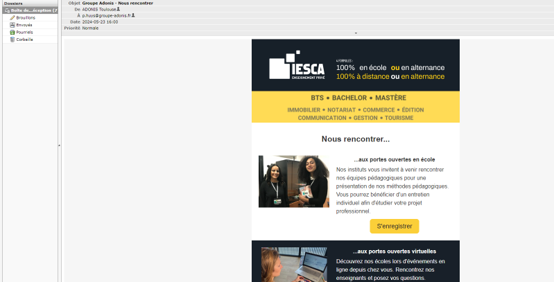

Création de templates de mail
J'ai actualisé plusieurs modèles d'e-mails obsolètes et rétabli le bon fonctionnement du programme d'envoi de mails.
Détails de la mission
Après avoir terminé ma première mission d'intégration de contenu et de débogage de l'outil de gestion interne, ma troisième mission m'a conduit à résoudre un problème critique avec l'outil de mailing automatique du Groupe Adonis. Cet outil est conçu pour envoyer des emails avec des templates précis à des prospects après un certain nombre de jours. Cependant, suite à une mise à jour récente du formulaire et de la base de données, le CRON job, qui gérait l'envoi automatique des emails tous les jours, avait cessé de fonctionner.
Débogage du CRON job et gestion des templates d'email
Diagnostic et correction du CRON job
Analyse du problème : J'ai commencé par examiner les logs et les configurations du CRON job pour identifier les causes de son dysfonctionnement. Il est apparu que les modifications apportées au formulaire et à la base de données avaient perturbé le script PHP du CRON job, entraînant des erreurs lors de l'exécution quotidienne.
Correction des scripts PHP : J'ai dû ajuster les scripts PHP en rétablissant les requêtes SQL et les paramètres nécessaires pour que le CRON job fonctionne correctement. Cette tâche a impliqué la réécriture de certaines sections du code afin de les rendre compatibles avec les nouvelles structures de la base de données. Après avoir effectué ces corrections, j'ai testé le CRON job en le déclenchant manuellement pour vérifier qu'il envoyait bien les emails comme prévu.
Création et gestion des templates d'email
Utilisation de Stripo : Pour la création des templates d'email, j'ai utilisé l'outil Stripo. Stripo est une plateforme permettant de concevoir des emails avec des designs professionnels et personnalisés. J'ai conçu plusieurs templates d'email en utilisant cet outil, en m'assurant qu'ils répondaient aux exigences spécifiques de communication avec les prospects.
Personnalisation des templates : Les templates devaient être adaptés pour différentes écoles, ce qui impliquait des variations de couleurs et de contenu selon chaque établissement. J'ai préparé les premiers modèles en tenant compte des différentes personnalisations nécessaires et j'ai commencé à les implémenter dans le système.
Gestion des modifications : Après avoir configuré les bases, j'ai laissé un stagiaire continuer le travail sur les templates restants. Pour faciliter son travail, j'ai développé un outil en PHP permettant de visualiser tous les modèles disponibles pour chaque école. Cet outil affichait les différents templates avec leurs variations de couleurs et de contenu, permettant ainsi une gestion centralisée et claire des modèles d'email.
Difficultés rencontrées et solutions apportées
Complexité du formulaire et du site ancien
Problèmes rencontrés : La mise à jour du formulaire a été particulièrement difficile en raison de la structure compacte et ancienne du site. Le code était obsolète et contenait des pratiques considérées comme mauvaises par les normes modernes, ce qui a compliqué la tâche de modification.
Solutions apportées : J'ai dû consacrer du temps à comprendre l'architecture du site et à réécrire certaines parties du code pour le rendre compatible avec les nouvelles exigences. Cette tâche a exigé une adaptation minutieuse aux pratiques modernes tout en respectant les contraintes héritées du système ancien.
Difficultés avec la base de données
Problèmes rencontrés : La modification de la base de données s'est avérée complexe car les modifications nécessitaient l'intervention d'un développeur. Cependant, les développeurs étaient souvent occupés, ce qui a ralenti le processus de mise à jour.
Solutions apportées : J'ai coordonné avec les développeurs disponibles pour obtenir leur aide, tout en réalisant les modifications possibles en attendant leur intervention. J'ai également documenté les problèmes rencontrés pour faciliter leur prise en charge ultérieure.
Problèmes avec l'outil de création de templates
Problèmes rencontrés : Trouver un outil adapté pour créer les templates d'email a été compliqué en raison des restrictions financières. L'outil Stripo, bien qu'efficace, exigeait un paiement pour obtenir le code HTML des templates.
Solutions apportées : Pour contourner ce problème, j'ai utilisé Stripo pour concevoir les templates visuellement, puis j'ai récupéré le code HTML directement depuis l'outil en utilisant des méthodes alternatives, ce qui m'a permis de contourner les frais et d'obtenir les modèles nécessaires pour l'outil de mailing.
Retour d'expérience
La mission de débogage de l'outil de mailing automatique a été un défi majeur, mais elle a également été très enrichissante. Les difficultés rencontrées, notamment avec le code ancien, les contraintes de la base de données et les problèmes d'outil de création de templates, ont nécessité une approche innovante et une résolution de problèmes approfondie. Le développement de l'outil de visualisation des modèles a été un succès, facilitant grandement la gestion des communications avec les prospects.
J'ai documenté toutes les modifications et solutions mises en œuvre pour le CRON job et les templates d'email. Des recommandations ont été préparées pour optimiser le processus d'envoi des emails et améliorer la gestion des templates à l'avenir. Ces recommandations ont été partagées avec l'équipe pour garantir une gestion plus fluide et une meilleure continuité dans l'amélioration de l'outil de mailing automatique.

* Voici à quoi ressemble le même templates pour des apprenants d'écoles différentes.